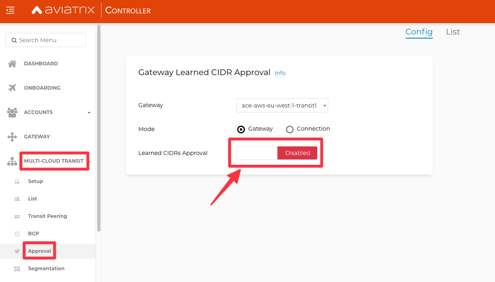
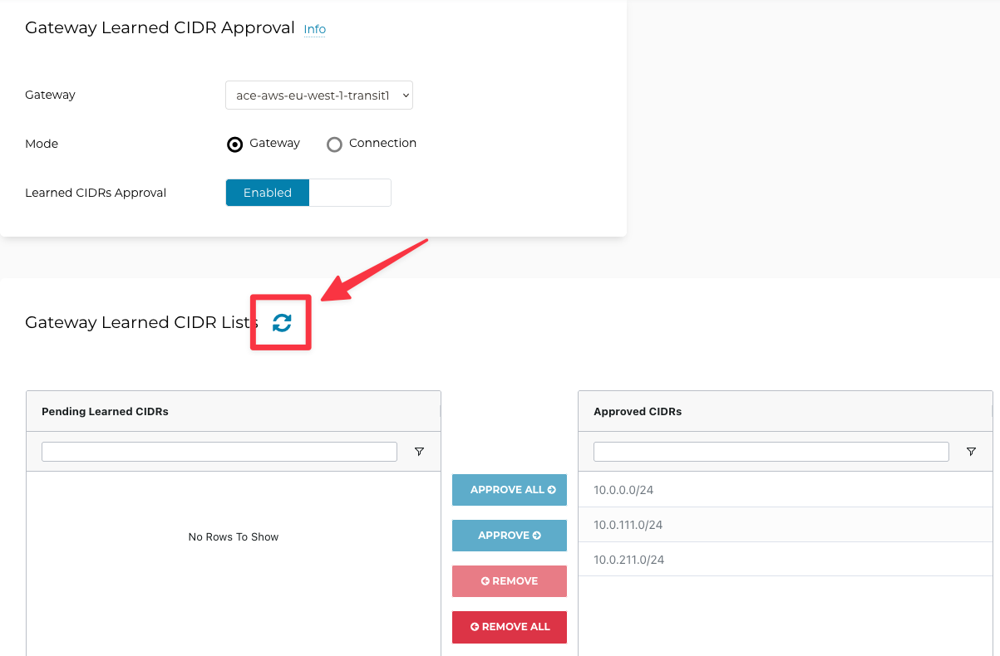
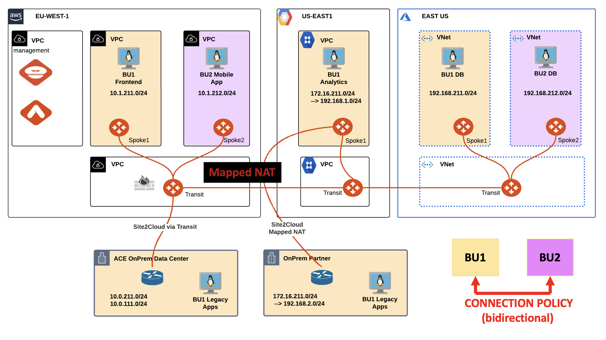
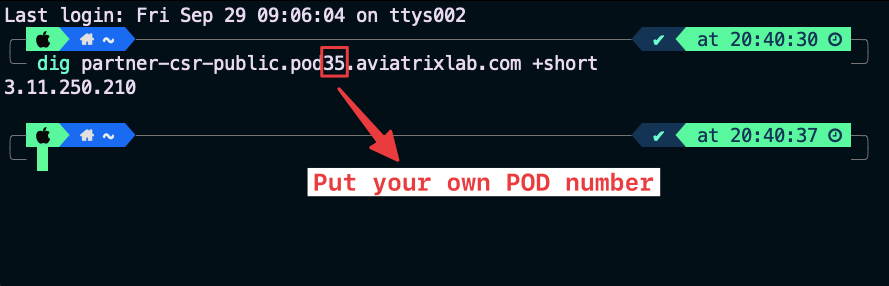

Lab 6 - Site2Cloud#
1. SCENARIO#1#
ACE’s OnPrem Data Center has recently hired a new network engineer.
You have been engaged for activating the Route Approval feature in order to protect the MCNA from unauthorized advertisements.
 Figure 70: Lab 5 Scenario#1 Topology
Figure 70: Lab 5 Scenario#1 Topology
2. CHANGE REQUEST#
Activate the Route Approval feature for monitoring unauthorized advertisements that could be received from the DC.
Tip
Go to Controller > MULTI-CLOUD TRANSIT > Approval and turn the knob “Learned CIDRs Approval” for the ace-aws-eu-west-1-transit1 GW.
 Figure 71: BGP Route Approval Activation
Afterwards, inform the trainer that you have activated the feature with the tool “Raise Hand” on Zoom, as depicted below.
 Figure 72: Raise Hand tool on Zoom
Figure 72: Raise Hand tool on Zoom
Please wait for the trainer to inform you about the injection of the failure!
Wait for one minute and then click on the refresh button to see what kind of route will be blocked inside the Pending Learned CIDRs state, as depicted below.
 Figure 73: Refresh
You have successfully prevented that somebody from the DC could jeopardize the whole network inside the multicloud infrastructure! Of course do not approve a default route!
3. SCENARIO#2#
ACE’s OnPrem Partner needs to be connected to the MCNA in the GCP region, however, it has overlapping IP’s with BU1’s Analytics VPC.
You have been engaged for creating a Site2Cloud connection between the GCP Spoke GW and the OnPrem Partner router and also for resolving the IP conflict through the Mapped NAT feature.
 Figure 74: Lab 6 Scenario#2 Topology
4. CHANGE REQUEST#
Create a new S2C connection.
Tip
Go to Controller > SITE2CLOUD > Setup, then click on +ADD NEW.
 Figure 75: Add New S2C
Figure 75: Add New S2C
Configure the new S2C connection based on the schema below.
VPC: ace-gcp-us-east1-spoke1
Connection Type: Mapped
Connection name: S2C-PARTNER
IKEv2: Enable
Remote Gateway IP Address: follow the Note below
Note
Use the “dig partner-csr-public.pod#.aviatrixlab.com +short” command from your personal laptop terminal to resolve the symbolic public name of the OnPrem Partner CSR router and retrieve the remote gateway public IP address, as depicted in the example below.
Replace the # symbol with your POD number!
The example is referring to POD #32 (please issue the command based on your POD number!).
 Figure 76: Retrieving the Public IP
Pre-shared Key: Aviatrix123#
Local Tunnel IP: 169.254.0.1/30
Remote Tunnel IP: 169.254.0.2/30
Configure the Mapped NAT with the following CIDRs:
Remote Subnet (Real) = 172.16.211.0/24
Remote Subnet (Virtua) = 192.168.2.0/24
Local Subnet (Real) = 172.16.211.0/24
Local Subnet (Virtual) = 192.168.1.0/24
 Figure 77: Retrieving the Public IP
Figure 77: Retrieving the Public IP
Wait some minutes for the completion of the S2C. Click on the refresh button to see the status changing from red to green.
 Figure 78: S2C is up and running
Figure 78: S2C is up and running
SSH to the OnPrem partner router and issue the following command:
ping 192.168.1.100 source gigabitethernet1
 Figure 79: Ping is ok
Figure 79: Ping is ok